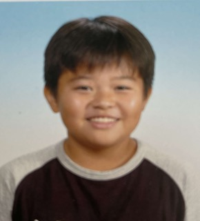
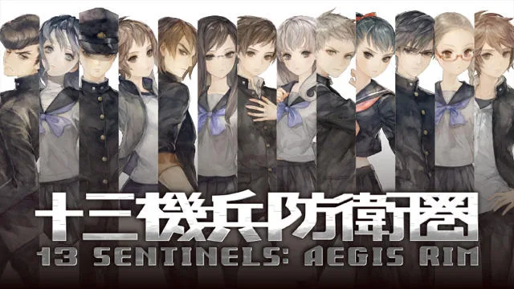

・学科、名前
情報システム学科、奥澤拓哉
・好きなこと
ドローン、映画、本、ゲーム
・やってた部活
小→バスケ、中→卓球、高→弓道
・好きな食べ物
ローストビーフ、酢だこ、梅酒

・去年からやってるやってたゲーム
NieR:Automata、Stray
十三機兵防衛圏、HORIZON
原神、CULT OF THE LAMB
FORSPOKEN、ポケモンSV
・去年読んでいた本
いろいろ
・今、特にやってること
JavaとPythonと...

アトラス × ヴァニラウェアによるドラマチックシミュレーションアドベンチャーゲーム。
80年台を舞台に"13人の主人公"が"機兵"と呼ばれるロボットに乗り込み、
戦いに身を投じ、それぞれの視点により物語の謎が紐解かれ、真相に迫っていく。
このゲームは『崩壊編』『追想編』
『究明編』の3部で構成されており、『崩壊編』では戦いに、
『追想編』では謎多きの物語に、『究明編』では物語の深層に身を投じることになる。
複雑に絡み合う13人の物語をめぐる『追想編』はフルボイスで、どの人物からでも始めることができるので、自分なりの展開、順番で自然と物語にのめり込んでしまう。
また、タワーディフェンス形式で作られた『崩壊編』では、それぞれの乗り込む"機兵"ごとに多くの攻撃技・支援技があり、
プレイヤのスタイルに合った攻略を進めることができる。
さらに『究明編』では、『崩壊編』
『追想編』で得ることができるアイテムを消費し、
さらなる情報の解放をしたり、主人公ごとのストーリーの流れを年代別に一覧で確認することができ、さらに沼る。
価格はPS4版・Switch版ともに,￥7,678円。